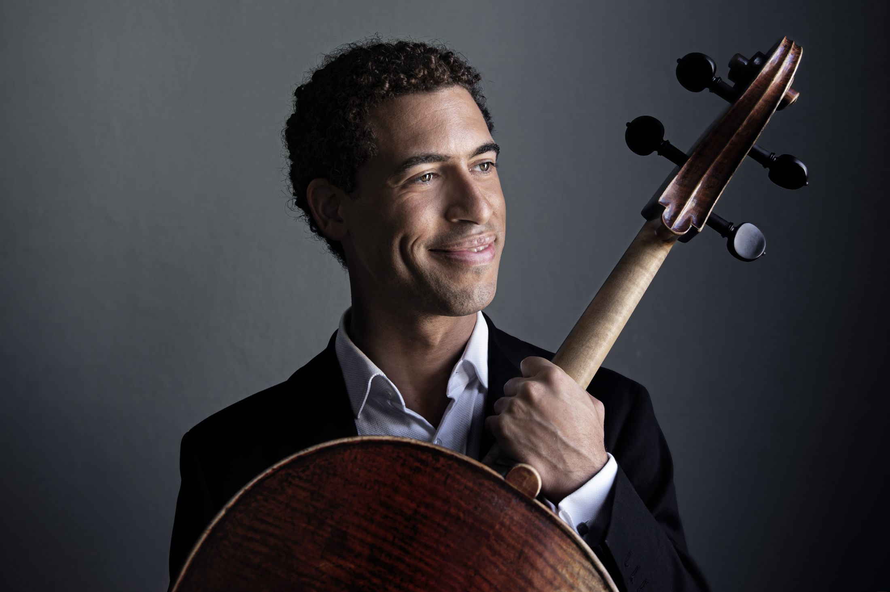

Der in Boston geborene Cellist Tony Rymer trat als Konzertsolist unter anderem mit dem Atlanta Symphony Orchestra, den Boston Pops, dem Cleveland Orchestra, dem Detroit Symphony Orchestra und dem Pittsburgh Symphony Orchestra auf.
Er gewann den Ersten Preis beim Sphinx-Wettbewerb (Senior Division) und bei der Washington International Competition, den Zweiten Preis beim Internationalen George-Enescu-Wettbewerb 2014 sowie den Dritten Preis bei der Stulberg International String Competition. Als Solist war er bei WGBH Boston, WCLV Cleveland, in NPRs Performance Today und bei den BBC Proms zu hören und gehörte zu den ersten Trägern des Jack Kent Cooke Young Artist Award der NPR-Sendung From the Top.
KammermusikDie Kammermusik steht im Zentrum seines Musizierens. Er konzertierte mit Hilary Hahn, Itzhak Perlman, Midori, Ani Kavafian, Miriam Fried, Kim Kashkashian, Paul Katz, Martin Helmchen und Dénes Várjon sowie mit Mitgliedern des Guarneri-, Takács-, Juilliard-, Orion- und Cleveland-Quartetts.
Er ist regelmäßig bei Festivals und Konzertreihen in Amerika, Europa und Asien zu Gast, darunter Marlboro Music, das Ravinia Steans Music Institute, das Perlman Music Program, das Bard Music Festival, Krzyzowa Music, das Festival del Lago, das Apple Hill Center for Chamber Music, die Leeds International Concert Series, die Brooklyn Chamber Music Society und Musical Masterworks, und trat mit dem Kaleidoscope Chamber Collective auf.
AusbildungTony Rymer begann im Alter von fünf Jahren in Boston mit dem Cellospiel. Von 1996 bis 2007 war er Stipendiat von Project STEP und besuchte die Walnut Hill School for the Arts. Bachelor und Master absolvierte er am New England Conservatory bei Paul Katz und Laurence Lesser als Inhaber des Laurence Lesser Presidential Scholarship; anschließend schloss er einen weiteren Master of Music mit Bestnote in der Klasse von Frans Helmerson an der Hochschule für Musik Hanns Eisler Berlin ab.
Darüber hinaus arbeitete er privat mit Yo-Yo Ma und besuchte Meisterkurse bei Anner Bylsma, Gary Hoffman, Steven Isserlis und Pieter Wispelwey.
Er spielt ein Violoncello von Jean-Baptiste Vuillaume, Paris – eine großzügige Leihgabe der Deutschen Stiftung Musikleben.